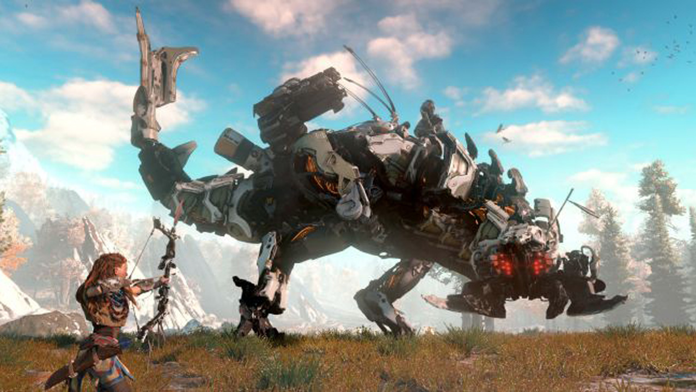

Elden Ring Review
 One of the many bosses in Elden Ring:
One of the many bosses in Elden Ring:
Malenia, Blade of Miquella
Elden Ring is the logical evolution in the trademark souls formula, borrowing the best features from previous titles and blending them into a finely-tuned mix of intense combat and high-pressure precision. While veterans will surely enjoy the punishment that comes with it, newcomers are treated to what could arguably be one of FromSoftware's more approachable titles to get into.
The Lands Between is vast and full of danger at every turn but heavily encourages exploration, offering handsome rewards for those who choose to face the dangers head-on. Capped off by a beautiful open-world brimming with mind-blowing monster and level design, Elden Ring easily rises to the hype and exceeds expectations. 10/10
Horizon Forbidden West Review

An iconic enemy in the Horizon series,
the Thunderjaw
Horizon Forbidden West delivers everything that made the first game unforgettable and then piles on so much more. Character realism and environmental detail have been turned all the way to eleven. Every single element of this game has been crafted by perfectionists. Fighting off hordes of high tech machines keeps your heart pumping and the hugely diverse spectrum of machines to take down make you put a lot of effort into fine-tuning your approach to combat. The narrative lays down a perfect sense of urgency that drives you through a 20+ hour campaign that will keep you on the edge of your seat until the very end.
Bigger and better than its predecessor in every single way, Horizon Forbidden West is a game that’s ever so easy to get lost in. 9/10